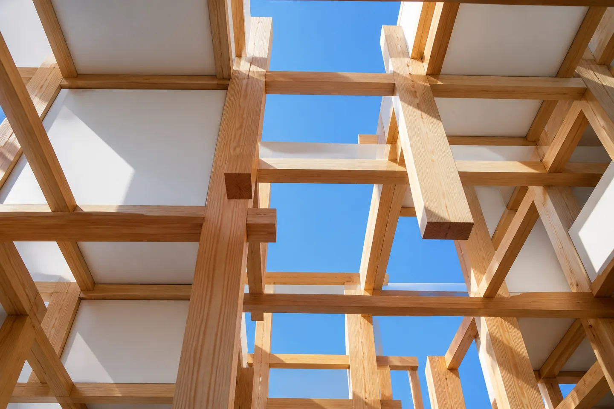
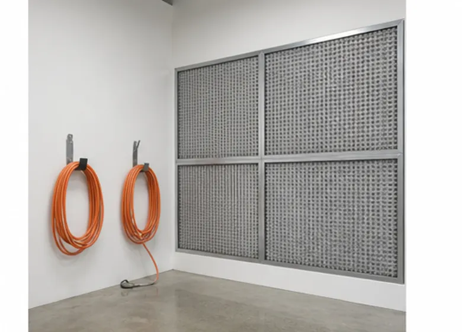
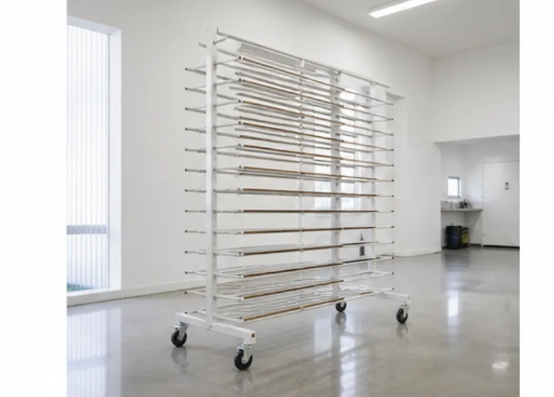
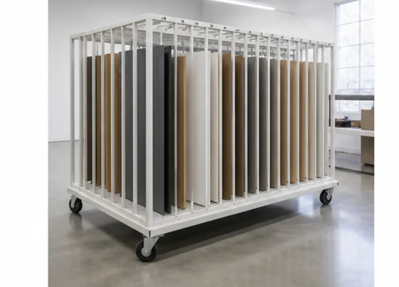
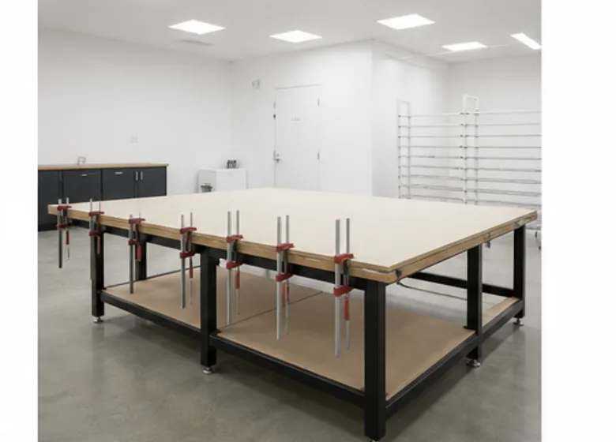
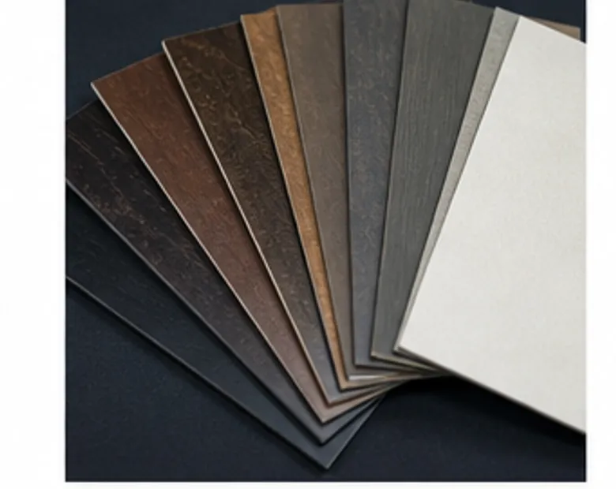

OVERVIEW
塗る・乾かす・磨くを
ひとつの建物で
2015年、本社の工場から塗装工程を切り出して、三好にスタジオを構えました。木工の粉じんが入らない場所で塗装を行うためです。
1階に研磨と検品のスペース、奥に吹付ブースと乾燥棚を並べています。部材を台車に載せたまま次の工程へ動かせるので、塗膜にふれる回数を減らせます。
- 所在地
- 〒135-0022 東京都江東区三好3丁目4-19
- 延床面積
- 約420㎡
- 作業時間
- 平日 8:30〜17:30
FEATURE
設備と特徴

01
吹付ブース 2基
壁一面の排気フィルターで、塗料ミストを外へ逃がします。幅3,000mmまでの天板を寝かせたまま吹き付けられる広さがあります。

02
可動式の乾燥棚 12台
塗り終えた部材を水平に保ったまま乾かす棚です。温度と湿度を記録し、季節によって乾燥時間を変えています。

03
部材の保管台車
受け入れた部材は台車ごとに案件を分けて保管します。工程間の移動もこの台車のまま行います。

04
研磨・検品台
2,400×1,200mmの作業台を2台。真上と斜めの両方から照明を当て、研磨跡や塗りむらを確かめます。
FINISH
対応できる仕上げ
塗料は、使われる場所・さわる頻度・水や熱がかかるかどうかを伺ってから選びます。同じ「艶消し」でも、仕上げ方は何通りもあります。
迷ったときは、樹種と仕上げの組み合わせを変えた色見本を数枚お作りします。

- クリア塗装
- 木目を生かす透明の仕上げ。全艶から艶消しまで、艶の段階を細かく指定できます。
- 着色仕上げ
- ステインや顔料で色を入れ、クリアで保護します。既存の家具や床材への色合わせも承ります。
- 塗りつぶし
- 木目を見せない不透明の仕上げ。指定の色番号に合わせて調色します。
- オイル仕上げ
- 木に染み込ませて手ざわりを残す仕上げ。定期的なお手入れの方法もあわせてお伝えします。
- 鏡面仕上げ
- 塗り重ねた膜を研ぎ、磨き上げて映り込みをつくります。サインや天板に。
- 拭き取り・古色
- 拭き取りで濃淡をつけ、使い込んだような表情に仕上げます。
FLOW
仕上げまでの流れ
01
ご相談
図面・用途・ご希望の雰囲気を伺います。実物の家具や床材の写真があれば一緒にお送りください。
02
色見本の作成
実際に使う樹種で見本板を作ります。ご確認いただき、決まった一枚を基準板として保管します。
03
お見積り
面積・仕上げ・数量から算出します。部材の受け入れ方法と納期もこの段階で決めます。
04
研磨・塗装
下地を整え、塗りと研ぎを繰り返します。途中経過の写真をお送りすることもできます。
05
検品・納品
基準板と並べて色と艶を確かめ、保護材で包んで納品します。
スタジオの見学もお受けしています。設計段階で実物の塗り板を見ていただくと、仕上げの相談が進めやすくなります。
CONTACT
面のことなら、まず相談を。
図面の段階からご一緒できます。